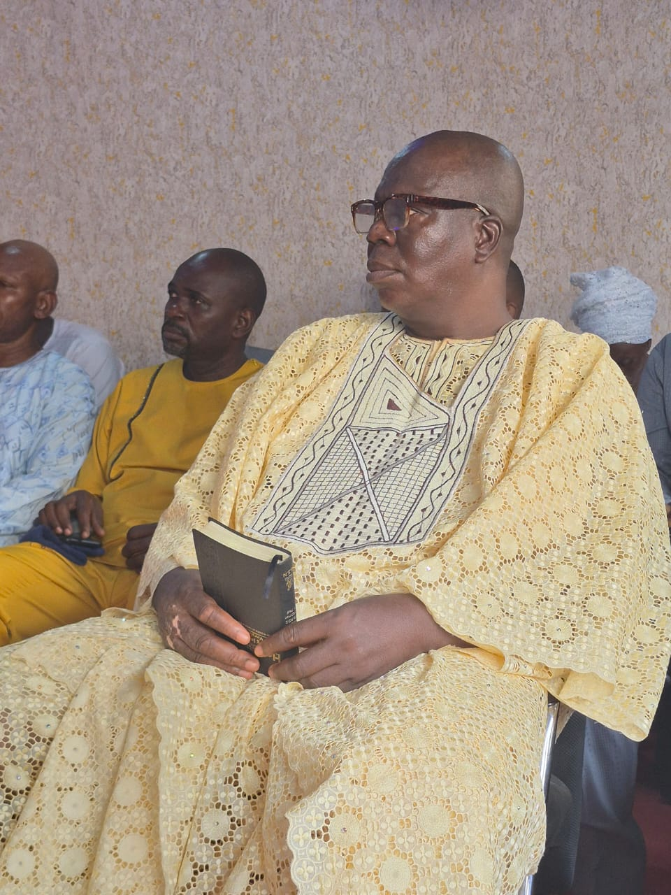
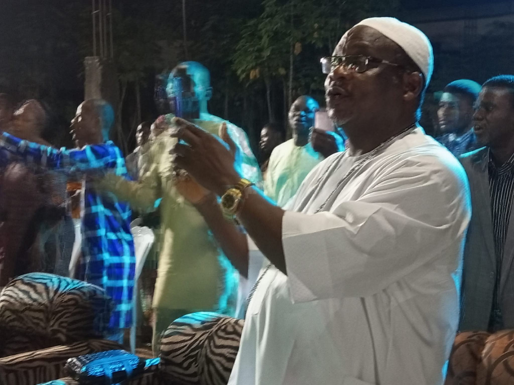

Special & Important Guests
Every year, God sends remarkable people to grace our Praise Night. Here are some of the special individuals who have joined us to celebrate His goodness.
Evang. Ojo Ade
Evang. Ojo Ade joined the founder, Pastor Tajudeen Hakeem, to rejoice and minister during the Annual Praise Concert. His powerful ministration brought the entire congregation to their feet as the spirit of God moved mightily through his worship and testimony.


Prophet Jesuloba (Spiritual Father)
The spiritual father of the founder known as Prophet Jesuloba graced our Praise Night with his presence and anointing. His words of blessing and deep intercession over the ministry set the atmosphere ablaze with fire and faith, reminding the congregation of the foundations upon which PGM was built.
Oba Rev. M.S. Akindele (Father of the day)
His Royal Majesty, Oba Rev. M.S. Akindele (The Olu of Owode Yewa), a renowned minister of God and a true worshipper, traveled from afar to be part of our Annual Praise Night. The presence of the Kabiyesi was a beautiful testament to the growing influence and impact of Pattern Of Good Works Ministry. Laying down his royal crown to honor the King of Kings, he joined the congregation to lift high the name of Jesus in a night that will never be forgotten.

Pastor Mrs Amarah
One of Nigeria's most anointed gospel ministers and a proud voice within the Pentecostal Fellowship of Nigeria (PFN), Pastor Mrs Amarah, graced the stage at our Praise Night. She led thousands into the very throne room of God, and her ministration was the highlight of the program — drawing tears, dancing, and deep encounters with the Holy Spirit across the entire congregation.